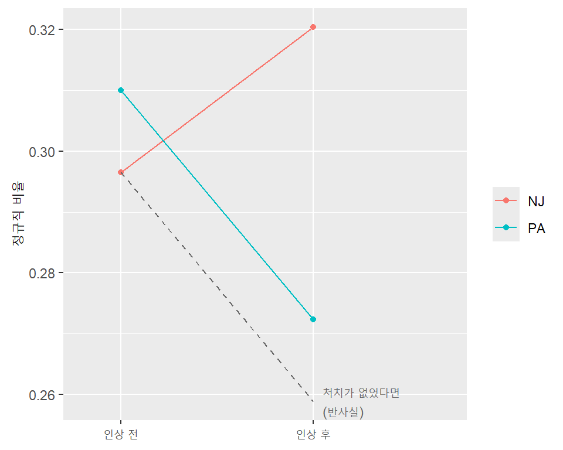
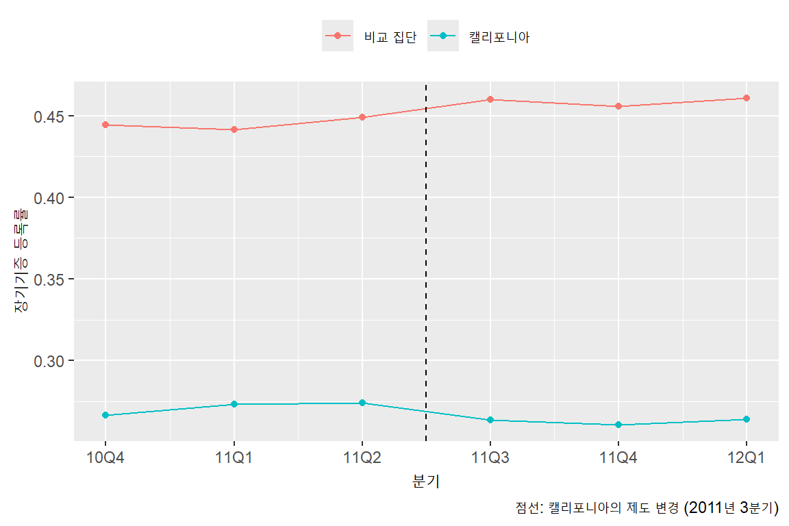

library(tidyverse)
library(janitor)
library(skimr)
library(broom)13주차. 인과관계 보여주기 (2): 관찰연구
1 도입
- 이번 주의 질문: 실험을 할 수 없을 때, 처치의 효과를 알기 위해 무엇과 비교해야 하는가?
- 최저임금을 올리면 고용이 줄어들까? 정부가 실험 삼아 지역별로 최저임금을 무작위로 정할 수는 없음
- 사회과학의 많은 질문은 윤리적, 현실적 이유로 실험이 어려움
- 지난주에 본 것
- 무작위 배정을 하면 평균 차이가 곧 처치효과
- NSW 처치군을 CPS 사람들과 비교하면 공변량을 넣어도 실험 결과를 되찾지 못함: 회귀는 자료에 있는 변수만 조정할 수 있음
- 이번 주의 흐름
- 관찰연구에서 흔히 하는 두 가지 단순 비교와 각각의 문제
- 두 비교를 합친 이중차분(difference-in-differences, DiD)
- 이중차분이 기대는 가정과 그 가정을 그림으로 점검하는 방법
2 관찰연구와 교란요인
2.1 관찰연구(observational study)
- 연구자가 처치를 배정하지 않고, 자연스럽게 일어난 일을 관찰한 자료로 비교하는 연구
- 처치를 받은 집단과 받지 않은 집단이 처치 외에도 여러 면에서 다를 수 있음
2.2 교란요인(confounder)
- 처치 이전에 정해진 변수로, 처치 여부와 결과 모두와 관련된 것
- 지난주의 예: 처치 전 소득. NSW 참여자는 소득이 낮았고(처치와 관련), 처치 전 소득은 1978년 소득과도 관련됨
- 교란요인이 있으면 집단 간 차이를 처치 때문이라고 말할 수 없음 (교란 편의, confounding bias)
- 회귀나 층별 비교로 교란요인을 조정할 수 있지만, 관측되지 않은 교란요인은 조정할 수 없음
2.3 관찰연구에서 흔한 두 가지 비교
- 처치 후 집단 비교: 처치 이후 시점에서 처치 집단과 비교 집단을 비교
- 문제: 두 집단이 원래부터 달랐을 수 있음
- 전후 비교: 같은 집단의 처치 전과 처치 후를 비교
- 시간이 지나도 변하지 않는 그 집단만의 특성은 저절로 조정됨
- 문제: 그 사이에 처치 외에 다른 일(경기 변화 등)이 일어났을 수 있음
- 이중차분: 두 비교를 합쳐 각각의 문제를 함께 해결하려는 방법
3 최저임금과 고용: 이중차분
3.1 데이터
- Card and Krueger (1994)의 연구
- 1992년 4월, 미국 뉴저지(NJ) 주는 최저임금을 시간당 4.25달러에서 5.05달러로 올림
- 이웃한 펜실베이니아(PA) 주의 동부 지역은 최저임금이 그대로였음. 두 지역은 경제 여건이 비슷함
- 두 주의 패스트푸드 매장을 인상 전(2~3월)과 인상 후(11~12월)에 조사
- 처치: 최저임금 인상. 처치 집단은 NJ 매장, 비교 집단은 PA 매장
- minwage.csv: 358개 매장. Imai, Quantitative Social Science의 자료
- 원래 조사는 410개 매장. 이 자료는 그중 일부
| 변수 | 내용 |
|---|---|
chain |
체인 (burgerking, kfc, roys, wendys) |
location |
위치 (PA, centralNJ, northNJ, shoreNJ, southNJ) |
wageBefore, wageAfter |
인상 전, 후의 시작 시급 (달러) |
fullBefore, fullAfter |
인상 전, 후의 정규직 직원 수 |
partBefore, partAfter |
인상 전, 후의 시간제 직원 수 |
- 한 행이 한 매장이고, 인상 전과 후의 값이 서로 다른 열에 들어 있음: 넓은(wide) 형태
minwage <- read_csv("data/minwage.csv")
minwage |>
skim()| Name | minwage |
| Number of rows | 358 |
| Number of columns | 8 |
| _______________________ | |
| Column type frequency: | |
| character | 2 |
| numeric | 6 |
| ________________________ | |
| Group variables | None |
Variable type: character
| skim_variable | n_missing | complete_rate | min | max | empty | n_unique | whitespace |
|---|---|---|---|---|---|---|---|
| chain | 0 | 1 | 3 | 10 | 0 | 4 | 0 |
| location | 0 | 1 | 2 | 9 | 0 | 5 | 0 |
Variable type: numeric
| skim_variable | n_missing | complete_rate | mean | sd | p0 | p25 | p50 | p75 | p100 | hist |
|---|---|---|---|---|---|---|---|---|---|---|
| wageBefore | 0 | 1 | 4.62 | 0.35 | 4.25 | 4.25 | 4.50 | 4.99 | 5.75 | ▇▃▃▁▁ |
| wageAfter | 0 | 1 | 4.99 | 0.26 | 4.25 | 5.05 | 5.05 | 5.05 | 6.25 | ▁▇▁▁▁ |
| fullBefore | 0 | 1 | 8.47 | 8.70 | 0.00 | 2.12 | 6.00 | 12.00 | 60.00 | ▇▂▁▁▁ |
| fullAfter | 0 | 1 | 8.36 | 7.81 | 0.00 | 2.00 | 6.00 | 12.00 | 40.00 | ▇▃▁▁▁ |
| partBefore | 0 | 1 | 18.75 | 10.29 | 0.00 | 11.00 | 16.25 | 25.00 | 60.00 | ▆▇▅▁▁ |
| partAfter | 0 | 1 | 18.69 | 10.57 | 0.00 | 11.00 | 17.00 | 25.00 | 60.00 | ▆▇▅▁▁ |
location에서 주를 나타내는 변수를 만듦
minwage <- minwage |>
mutate(state = if_else(location == "PA", "PA", "NJ"))
minwage |>
tabyl(state) state n percent
NJ 291 0.8128492
PA 67 0.18715083.2 처치가 실제로 일어났는가
- 새 최저임금(5.05달러)보다 시급이 낮은 매장의 비율
minwage |>
summarize(below_before = mean(wageBefore < 5.05),
below_after = mean(wageAfter < 5.05),
.by = state)# A tibble: 2 × 3
state below_before below_after
<chr> <dbl> <dbl>
1 PA 0.940 0.955
2 NJ 0.911 0.00344- NJ: 인상 전 91% → 인상 후 0.3%. 법이 실제로 지켜졌음
- PA: 인상 전후 모두 94~96%. PA 매장은 처치를 받지 않았음
- 처치가 실제로 달라졌는지부터 확인하는 것이 먼저
3.3 교란요인 점검: 체인 구성
- 체인마다 직원 구성이 다를 수 있음. 두 주의 체인 구성이 다르면 교란요인이 됨
minwage |>
tabyl(chain, state) |>
adorn_percentages("col") |>
adorn_rounding(3) chain NJ PA
burgerking 0.405 0.463
kfc 0.223 0.149
roys 0.251 0.224
wendys 0.120 0.164adorn_percentages("col"): 열(주)마다 합이 1이 되도록 비율로 바꿈- 구성이 조금 다름 (예: 버거킹 NJ 41%, PA 46%; KFC NJ 22%, PA 15%)
- 같은 체인끼리만 비교해 볼 수 있음 (층별 비교, subclassification). 아래에서 버거킹만 따로 계산
3.4 결과 변수: 정규직 비율
- 결과 변수로 직원 중 정규직의 비율을 사용
minwage <- minwage |>
mutate(fullpropBefore = fullBefore / (fullBefore + partBefore),
fullpropAfter = fullAfter / (fullAfter + partAfter))- 인건비가 오르면 매장이 정규직을 줄이고 시간제로 바꿀 수 있다는 질문
- 고용의 수준(몇 명을 고용했는가)이 아니라 구성(정규직이 얼마나 되는가)에 대한 질문이라는 점에 주의. 다른 결과 변수는 뒤에서 비교
3.5 두 가지 단순 비교
fullprop_means <- minwage |>
summarize(before = mean(fullpropBefore),
after = mean(fullpropAfter),
.by = state)
fullprop_means# A tibble: 2 × 3
state before after
<chr> <dbl> <dbl>
1 PA 0.310 0.272
2 NJ 0.297 0.320- 처치 후 집단 비교: 인상 후 NJ 0.320 − PA 0.272 = 0.048
- 그런데 인상 전에도 두 주는 달랐음 (NJ 0.297, PA 0.310)
- NJ 전후 비교: 0.320 − 0.297 = 0.023
- 그런데 같은 기간에 PA의 비율은 0.310에서 0.272로 내려감. 처치가 없어도 시간에 따라 변하는 부분이 있음
3.6 이중차분
- 아이디어: NJ의 변화에서, 처치가 없었어도 생겼을 변화를 뺌
- 처치가 없었을 때의 변화는 PA의 변화로 추정
\[ \text{DiD} = (\bar{Y}_{\text{NJ, 후}} - \bar{Y}_{\text{NJ, 전}}) - (\bar{Y}_{\text{PA, 후}} - \bar{Y}_{\text{PA, 전}}) \]
fullprop_means |>
mutate(change = after - before)# A tibble: 2 × 4
state before after change
<chr> <dbl> <dbl> <dbl>
1 PA 0.310 0.272 -0.0377
2 NJ 0.297 0.320 0.0239- NJ의 변화 0.023 − PA의 변화 (−0.038) = 0.062
- 최저임금 인상이 정규직 비율을 6.2%p 높였다고 추정. 인상 때문에 정규직을 줄였다는 증거는 없음

- 점선: NJ가 처치를 받지 않고 PA와 같은 만큼 변했다면 갔을 경로. 실제 NJ(인상 후)와 점선의 끝 사이의 거리가 이중차분 추정치
3.7 층별 비교: 버거킹만
minwage |>
filter(chain == "burgerking") |>
summarize(before = mean(fullpropBefore),
after = mean(fullpropAfter),
.by = state) |>
mutate(change = after - before)# A tibble: 2 × 4
state before after change
<chr> <dbl> <dbl> <dbl>
1 PA 0.350 0.321 -0.0288
2 NJ 0.311 0.358 0.0465- 버거킹만 보면: (0.358 − 0.311) − (0.321 − 0.350) = 0.076. 결론은 같은 방향
- 이중차분은 시간이 지나도 변하지 않는 매장의 특성(체인 등)을 이미 빼 주므로, 체인 구성의 차이는 큰 문제가 되지 않음
3.8 회귀로 같은 값 구하기
- 이중차분은 회귀로도 계산할 수 있음
\[ Y = b_0 + b_1 \cdot \text{NJ} + b_2 \cdot \text{after} + b_3 \cdot (\text{NJ} \times \text{after}) \]
NJ: NJ 매장이면 1,after: 인상 후 관측이면 1- 교호작용 항의 계수 \(b_3\)이 이중차분 추정치 (8주차의 교호작용)
- 이렇게 추정하려면 한 행이 “매장 × 시점”인 긴(long) 형태의 자료가 필요함
- 지금은 한 행에 인상 전과 후가 함께 들어 있음 → 행 하나를 둘로 나눠야 함
- 변환은 두 단계
pivot_longer():...Before,...After열을 모두 길게 펴면서, 열 이름을 변수 이름(wage,full, …)과 시점(Before,After)으로 나눔pivot_wider(): 변수 이름을 다시 열로 펼침
minwage_long <- minwage |>
mutate(id = row_number()) |>
pivot_longer(cols = ends_with(c("Before", "After")),
names_to = c("variable", "period"),
names_pattern = "(.*)(Before|After)") |>
pivot_wider(names_from = variable, values_from = value)
minwage_long |>
head(4)# A tibble: 4 × 9
chain location state id period wage full part fullprop
<chr> <chr> <chr> <int> <chr> <dbl> <dbl> <dbl> <dbl>
1 wendys PA PA 1 Before 5 20 20 0.5
2 wendys PA PA 1 After 5.25 0 36 0
3 wendys PA PA 2 Before 5.5 6 26 0.188
4 wendys PA PA 2 After 4.75 28 3 0.903id: 같은 매장의 두 행을 구별하기 위해 먼저 매장 번호를 붙임names_pattern = "(.*)(Before|After)": 열 이름fullBefore를 괄호 두 개로 나누어full과Before로 만듦- 358개 매장 × 2시점 = 716행
minwage_long <- minwage_long |>
mutate(nj = as.integer(state == "NJ"),
after = as.integer(period == "After"))
fit_did <- lm(fullprop ~ nj * after, data = minwage_long)
tidy(fit_did, conf.int = TRUE)# A tibble: 4 × 7
term estimate std.error statistic p.value conf.low conf.high
<chr> <dbl> <dbl> <dbl> <dbl> <dbl> <dbl>
1 (Intercept) 0.310 0.0295 10.5 4.11e-24 0.252 0.368
2 nj -0.0134 0.0327 -0.411 6.81e- 1 -0.0777 0.0508
3 after -0.0377 0.0417 -0.903 3.67e- 1 -0.120 0.0442
4 nj:after 0.0616 0.0463 1.33 1.84e- 1 -0.0293 0.152 nj * after:nj,after, 그리고 둘의 교호작용 항(nj:after)을 모두 넣음nj:after의 계수 0.062: 위에서 손으로 계산한 값과 같음- 각 계수의 의미
- 절편: PA, 인상 전의 평균 (0.310)
nj: 인상 전 NJ와 PA의 차이after: PA의 전후 변화nj:after: NJ의 변화가 PA의 변화보다 얼마나 더 큰가 (이중차분)
- 회귀를 쓰면 신뢰구간도 얻을 수 있음: 0을 포함함. 정규직 비율이 늘었다고 확신하기는 어려움
- 같은 매장을 두 번 관측했다는 점을 고려하면 표준오차를 다르게 계산해야 하지만 이 강의에서는 다루지 않음
3.9 결과 변수를 바꾸면
- 정규직 비율은 고용의 구성에 대한 질문. 고용의 수준을 보면 어떨까?
- 같은 계산을 결과 변수만 바꾸어 반복
minwage_long <- minwage_long |>
mutate(fte = full + 0.5 * part) # 시간제 직원은 0.5명으로 계산
did_by_outcome <- tibble(
outcome = c("fullprop", "fte", "full", "part"),
description = c("정규직 비율", "정규직 + 0.5 × 시간제", "정규직 수", "시간제 수"),
did = NA
)
for (i in 1:nrow(did_by_outcome)) {
f <- as.formula(paste(did_by_outcome$outcome[i], "~ nj * after"))
fit <- lm(f, data = minwage_long)
did_by_outcome$did[i] <- coef(fit)["nj:after"]
}
did_by_outcome# A tibble: 4 × 3
outcome description did
<chr> <chr> <dbl>
1 fullprop 정규직 비율 0.0616
2 fte 정규직 + 0.5 × 시간제 2.45
3 full 정규직 수 2.93
4 part 시간제 수 -0.962 as.formula(paste(...)): 문자열을 이어 붙여 회귀식을 만듦. 결과 변수만 바꾸어 같은 회귀를 반복할 때 사용- 어느 결과 변수로 보아도 NJ의 고용이 PA보다 줄었다는 증거는 없음
- 정규직 + 0.5 × 시간제로 보면 NJ가 상대적으로 2.4명 늘어남
- 원래 논문은 관리자까지 포함한 고용 수로 같은 방향의 결과를 보고함 (이 자료에는 관리자 수가 없음)
- 무엇을 결과 변수로 볼지는 분석하는 사람이 정하는 것. 결과 변수에 따라 답하는 질문(구성인가 수준인가)이 달라짐
3.10 이중차분의 핵심 가정: 평행추세
- 이중차분은 “처치가 없었다면 NJ도 PA와 같은 만큼 변했을 것”이라고 가정함
- 평행추세 가정(parallel trends assumption): 처치가 없었을 때 두 집단의 결과가 같은 추세로 움직임
- 두 집단의 수준은 달라도 됨. 변화가 같아야 함
- 이 가정은 처치 이후에 대해서는 확인할 수 없음 (반사실이므로)
- 처치 이전에 여러 시점의 자료가 있으면, 적어도 처치 전에 두 집단이 같은 추세였는지는 확인할 수 있음
- 최저임금 자료는 인상 전과 후 두 시점뿐이라 이 확인을 할 수 없음
4 평행추세를 그림으로 확인하기: 장기기증 등록
4.1 데이터
- 미국 캘리포니아 주는 2011년 3분기부터 운전면허 발급 때 장기기증 등록 여부를 묻는 방식을 바꿈
- 등록할지를 반드시 고르도록 하는 방식(active choice)으로 바꿈
- 질문: 이 변화가 장기기증 등록률을 높였는가? (Kessler and Roth 2014)
- organ.csv: 27개 주 × 6분기 (2010년 4분기 ~ 2012년 1분기).
causaldata패키지의organ_donations를 csv로 저장한 것- 처치 집단: 캘리포니아. 비교 집단: 이런 변화가 없었던 26개 주
| 변수 | 내용 |
|---|---|
State |
주 |
Quarter |
분기 (예: Q42010은 2010년 4분기) |
Rate |
장기기증 등록률 |
Quarter_Num |
분기 번호 (1 = 2010년 4분기, …, 6 = 2012년 1분기) |
organ <- read_csv("data/organ.csv")
organ |>
skim()| Name | organ |
| Number of rows | 162 |
| Number of columns | 4 |
| _______________________ | |
| Column type frequency: | |
| character | 2 |
| numeric | 2 |
| ________________________ | |
| Group variables | None |
Variable type: character
| skim_variable | n_missing | complete_rate | min | max | empty | n_unique | whitespace |
|---|---|---|---|---|---|---|---|
| State | 0 | 1 | 4 | 20 | 0 | 27 | 0 |
| Quarter | 0 | 1 | 6 | 6 | 0 | 6 | 0 |
Variable type: numeric
| skim_variable | n_missing | complete_rate | mean | sd | p0 | p25 | p50 | p75 | p100 | hist |
|---|---|---|---|---|---|---|---|---|---|---|
| Rate | 0 | 1 | 0.45 | 0.15 | 0.12 | 0.33 | 0.44 | 0.56 | 0.79 | ▃▆▇▇▂ |
| Quarter_Num | 0 | 1 | 3.50 | 1.71 | 1.00 | 2.00 | 3.50 | 5.00 | 6.00 | ▇▃▃▃▃ |
- 처치 시작: 2011년 3분기 =
Quarter_Num4. 처치 이전 3분기, 이후 3분기
organ <- organ |>
mutate(ca = as.integer(State == "California"),
after = as.integer(Quarter_Num >= 4))4.2 처치 이전의 추세 비교
- 캘리포니아와 비교 집단(나머지 26개 주의 평균)의 분기별 추이
organ_trend <- organ |>
summarize(rate = mean(Rate), .by = c(ca, Quarter_Num)) |>
mutate(group = if_else(ca == 1, "캘리포니아", "비교 집단"))
organ_trend |>
pivot_wider(id_cols = Quarter_Num, names_from = group, values_from = rate)# A tibble: 6 × 3
Quarter_Num `비교 집단` 캘리포니아
<dbl> <dbl> <dbl>
1 1 0.444 0.267
2 2 0.442 0.273
3 3 0.449 0.274
4 4 0.460 0.264
5 5 0.456 0.261
6 6 0.461 0.264organ_trend |>
ggplot(aes(x = Quarter_Num, y = rate, color = group)) +
geom_line() +
geom_point() +
geom_vline(xintercept = 3.5, linetype = "dashed") +
scale_x_continuous(breaks = 1:6,
labels = c("10Q4", "11Q1", "11Q2", "11Q3", "11Q4", "12Q1")) +
labs(x = "분기", y = "장기기증 등록률", color = NULL,
caption = "점선: 캘리포니아의 제도 변경 (2011년 3분기)") +
theme(legend.position = "top")
- 수준은 크게 다름 (캘리포니아 약 0.27, 비교 집단 약 0.44~0.46): 이중차분에서는 문제가 아님
- 처치 이전 세 분기 동안 두 집단 모두 거의 변화가 없거나 조금 올라감: 평행추세 가정을 받아들일 만한 근거
- 처치 이후: 비교 집단은 조금 높아진 수준을 유지하는데, 캘리포니아는 오히려 조금 내려감
4.3 이중차분 추정
organ |>
summarize(rate = mean(Rate), .by = c(ca, after)) |>
arrange(ca, after)# A tibble: 4 × 3
ca after rate
<int> <int> <dbl>
1 0 0 0.445
2 0 1 0.459
3 1 0 0.271
4 1 1 0.263fit_organ <- lm(Rate ~ ca * after, data = organ)
coef(fit_organ)["ca:after"] ca:after
-0.02245897 - 이중차분 추정치 −0.022: 새 방식이 등록률을 2.2%p 낮춘 것으로 추정
- 등록을 늘리려던 제도 변경이 오히려 등록률을 낮춘 것으로 보임
- 처치를 받은 주가 캘리포니아 하나뿐이어서, 이 강의에서 배운 방식으로는 표준오차를 제대로 계산할 수 없음. 그래서 신뢰구간은 보고하지 않음
- 이 그림이 평행추세를 증명하는 것은 아님: 처치 이후에도 같은 추세였을지는 여전히 가정. 다만 처치 이전 추세가 비슷하다는 것은 가정을 믿을 근거가 됨
5 정리
| 하고 싶은 일 | 사용할 코드 |
|---|---|
| 열마다 비율로 바꾸기 | tabyl(x, group) 후 adorn_percentages("col") |
| 집단, 시점별 평균 | summarize(mean_y = mean(y), .by = c(group, period)) |
| 넓은 형태를 긴 형태로 | pivot_longer(names_to = c("variable", "period"), names_pattern = ) 후 pivot_wider() |
| 이중차분 추정 | lm(y ~ treat * after, data = )의 treat:after 계수 |
| 결과 변수를 바꾸어 같은 회귀 반복 | as.formula(paste(y, "~ treat * after")) |
- 관찰연구에서 인과효과를 주장할 때의 체크리스트 (지난주 체크리스트에 추가)
- 처치가 실제로 처치 집단에서만 일어났는가?
- 비교 집단은 처치가 없었을 때의 처치 집단을 대신할 수 있는가? 왜 그 집단을 골랐는가?
- 처치 이전의 추세가 비슷한가? 확인할 자료가 있는가?
- 같은 시기에 처치 집단에만 일어난 다른 일은 없는가?
- 결과 변수가 내가 묻고 싶은 질문에 맞는가?
6 더 공부할 주제
- 실험이 아닌 자료로 인과효과를 추정하는 다른 방법들
- 회귀 불연속(regression discontinuity): 점수가 기준선을 넘으면 처치를 받는 경우(예: 장학금, 지원 자격), 기준선 바로 위와 바로 아래를 비교
- 도구변수(instrumental variable): 처치에는 영향을 주지만 결과에는 처치를 통해서만 영향을 주는 변수를 이용
- 매칭(matching), 성향점수(propensity score): 처치 집단과 관측된 특성이 비슷한 사람을 골라 비교. 지난주의 NSW와 CPS 자료가 대표적인 연습 사례
- 합성통제(synthetic control): 처치 집단이 하나일 때 여러 비교 집단을 가중 평균해 비교 대상을 만듦. 이번 주의 캘리포니아처럼 처치 집단이 하나인 경우에 쓰임
- 참고서
- Huntington-Klein, The Effect (온라인 무료: https://theeffectbook.net)
- Cunningham, Causal Inference: The Mixtape (온라인 무료: https://mixtape.scunning.com)
7 실습
Important주의사항
마감: 12월 3일 (목) 오후 6시
아래 문제 1에 대한 답안을 작성하고 week13_ex_학번.R과 week13_ex_학번.docx를 E-class로 제출하세요.
위의 분석에 사용한 코드를 잘 읽어보고 연습한 후 문제에 답변할 때 활용하세요.
- 데이터: kielmc.csv (321채)
- 미국 매사추세츠 주의 한 도시에서 거래된 주택. 1978년 이후 쓰레기 소각장이 들어선다는 소문이 돌기 시작했고, 1981년에 건설이 시작됨 (Kiel and McClain 1995)
- 1978년과 1981년에 팔린 주택. 두 해에 팔린 집은 서로 다른 집임
wooldridge패키지의kielmc중 일부 변수를 csv로 저장한 것
| 변수 | 내용 |
|---|---|
year |
거래 연도 (1978, 1981) |
nearinc |
소각장 예정지에서 3마일(약 4.8km) 이내 (1 = 예) |
dist |
소각장 예정지까지의 거리 (피트) |
price |
거래 가격 (달러) |
rprice |
1978년 달러로 환산한 거래 가격. 결과 변수 |
age |
주택의 나이 (년) |
rooms, baths |
방 수, 욕실 수 |
area, land |
주택 면적, 대지 면적 (제곱피트) |
nbh |
동네 (1~6) |
소각장 건설이 주변 주택 가격에 미친 효과를 분석하시오.
연도와
nearinc별로 관측치 수와rprice의 평균을 2×2 표로 정리하시오.1981년 자료만 사용해 소각장 근처 주택과 나머지 주택의 평균 가격 차이를 계산하시오. 이 차이를 소각장의 효과로 볼 수 없는 이유를 1978년 자료를 근거로 설명하시오.
(1)의 표로 이중차분 추정치를 계산하고,
lm(rprice ~ nearinc * y81)로 같은 값을 얻는지 확인하시오 (y81은 1981년이면 1인 변수로 직접 만드시오). 추정치를 95% 신뢰구간과 함께 보고하고 해석하시오.소각장 근처 주택과 나머지 주택의 나이, 면적을 연도별로 비교하시오. (3)의 회귀에
age,area,land,rooms,baths를 공변량으로 넣어 다시 추정하고, 이중차분 추정치가 어떻게 바뀌는지 보고하시오.이 분석에서 평행추세 가정이란 무엇을 뜻하는지 이 자료의 상황에 맞게 설명하고, 이 자료로 그 가정을 확인할 수 있는지 쓰시오.